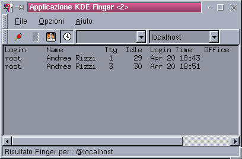

KFINGER v 0.7.2
In questa versione di Kfinger trovi:
-Finger temporizzato automatico
-Possibiltà di scelta dell'Username e del Server da liste
preimpostate
-Finestra di configurazione
-Esecuzione di un programma "Talk"
-Html in Italiano!!!
Kfinger Main window

Nella finestra principale del kfinger trovi:
BARRA MENU
-
FILE:
Finger Ora: Esegue il finger leggendo il nome utente e il server dalla
barra strumenti
Parla..: Avvia il programma di Talk
Esci: Chiude Kfinger
-
OPZIONI:
Impostazioni: Permette di cambiare le impostzioni
-
AIUTO:
Info: Informazioni su Kfinger
Aiuto: Apre la Guida KDE
TOOL BAR
-
Pulsante 1: Esegue il finger
-
Pulsante 2: Arresta il processo finger in corso
-
Pulsante 3: Avvia il programma di "Talk"
-
Pulsante 4: Finger Automatico (acceso/spento)
-
Combo1: Utente
-
Combo2: Server
STATUS BAR
Qui Kfinger scrive i messaggi che indicano lo stato dell'applicazione.
Andrea Rizzi
Bilibao@ouverture.it